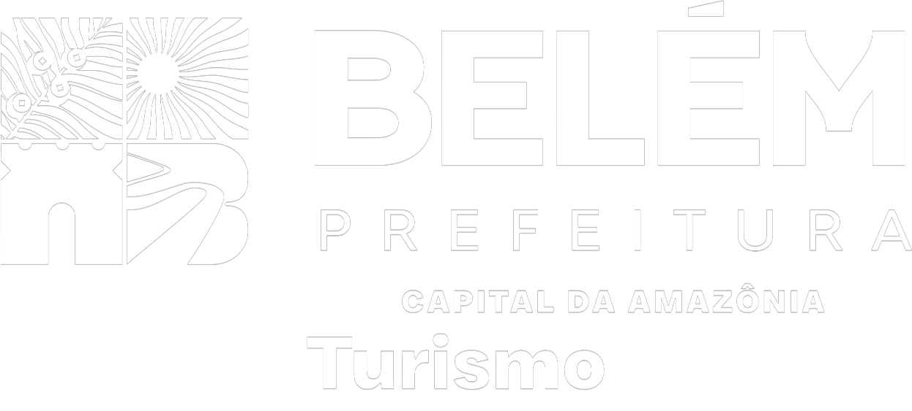
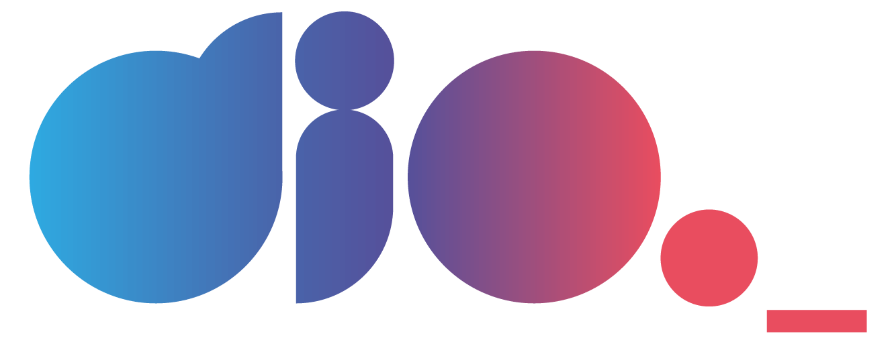

Sistemas web
Interfaces em React e Next.js, bancos de dados relacionais e dashboards que organizam informação bruta em algo que vira decisão.
Saiba maisKevin Santos
DESENVOLVIMENTO · AUTOMAÇÃO · DADOS
Desenvolvo sistemas, automações e dashboards para simplificar o trabalho e ajudar equipes a tomar decisões melhores.
Tecnologias que utilizo no desenvolvimento dos meus projetos
SOBRE MIM
Atuo com suporte técnico na Secretaria de Turismo de Belém (SETUR) e como analista de dados na SEDUC-PA, onde contribuo para o diagnóstico e a resolução de problemas técnicos e automatizo tarefas das unidades de tecnologia (CISEB) no Pará.
Além da rotina formal, transformo esse trabalho em sistemas completos: interfaces em React e Next.js, bancos de dados relacionais e dashboards que organizam informação bruta em algo que vira decisão. Atualmente, curso Ciência da Computação na Universidade da Amazônia (UNAMA). Também cursei Sistemas de Informação na Estácio de Sá, curso trancado em 2026. Tenho formação complementar em análise de dados (SENAI CEDAM) e Python (Bootcamp DIO).
Gosto de resolver o mesmo problema duas vezes: primeiro fazendo funcionar, depois fazendo funcionar bem — com documentação, tratamento de erro e um processo que qualquer pessoa da equipe consiga entender.
MEU PROCESSO
Mapeio o processo e identifico onde o trabalho pode melhorar.
Desenvolvo sistemas, automações e dashboards para cada contexto.
Valido, documento e aprimoro a solução com quem vai usá-la.
HABILIDADES
Da automação de processos internos à análise dos dados que ela gera.
ÁREAS DE ATUAÇÃO
Interfaces em React e Next.js, bancos de dados relacionais e dashboards que organizam informação bruta em algo que vira decisão.
Saiba maisScripts em Python e JavaScript para automatizar tarefas e rotinas administrativas.
Saiba maisDashboards para organizar dados e apoiar a gestão e a tomada de decisão.
Saiba maisTRAJETÓRIA

2026 — PresenteSITE: SETUR.BELEM.PA.GOV.BR
Secretaria Municipal de Turismo de Belém — SETUR
SITE: NÃO INFORMADO
SEDUC-PA (Secretaria de Educação do Pará) — CISEB
SITE: NÃO INFORMADO
TRAMONTINA BELÉM S/A
PROJETOS EM DESTAQUE
Da concepção ao deploy, incluindo documentação técnica.
Sistema web para gerenciamento de caixa, comandas, produtos, estoque, vendas e relatórios financeiros.
Desenvolvimento de portfólio web responsivo para apresentação profissional, experiências, habilidades e projetos.
Aplicação web para avaliação com integração de inteligência artificial para processamento e geração de resultados.
Aplicação web para elaboração e organização de planos de trabalho com recursos de inteligência artificial.
Aplicação web desenvolvida para criação e organização de planos de aula, com recursos de inteligência artificial. Projeto hospedado e disponível para acesso online.
Sistema completo de inscrição e divulgação de projetos científicos da rede estadual do Pará. Arquitetura MVC no backend, autenticação JWT, validação em duas camadas e frontend em Next.js com fluxo de cadastro em etapas.
Helpdesk completo rodando 100% em Google Workspace — perfis de usuário/técnico/admin, categorias com SLA, notificações por e-mail e anexos via Drive.
Automação em Python que monitora o Google Calendar em intervalos programados, autenticando via OAuth2 e preparando disparo de avisos automáticos.
Script que lê uma planilha de matrículas selecionadas e dispara convocações automáticas, controlando status de envio e evitando duplicidade de contato por aluno.
Kiosk de presença via QR Code em Next.js integrado a Google Sheets, com arquitetura modular e camada de API própria.
DEPOIMENTOS
Depoimento não informado. Nome e local a adicionar
FORMAÇÃO

Logo do SENAI: Ayamaguti, Wikimedia Commons, licenciada sob CC BY-SA 4.0.
CONTATO
Tem um processo manual que devia ser automático? Entre em contato.
Enviar um e-mail